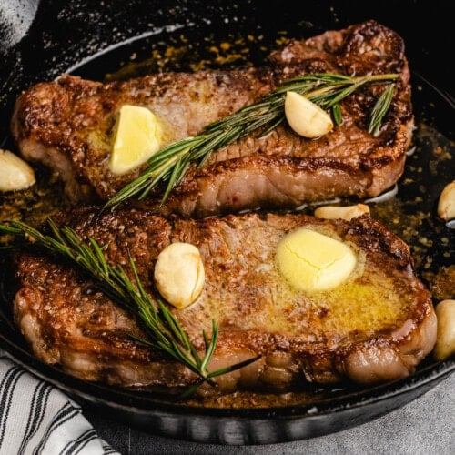

Home
Steak Recipe

Follow these easy steps to make a delicious pan seared steak!
Ingredients
- 1-2 inch steak
- 2 tbsp butter
- 2 garlic cloves (crushed)
- High smoke point oil
- Rosemary and other herbs(optional)
- Seasonings of your choice
Steps
- Heat pan on medium-high heat
- Add oil once pan has reached sufficient heat
- hello wrodl
- hello world
- hleo world